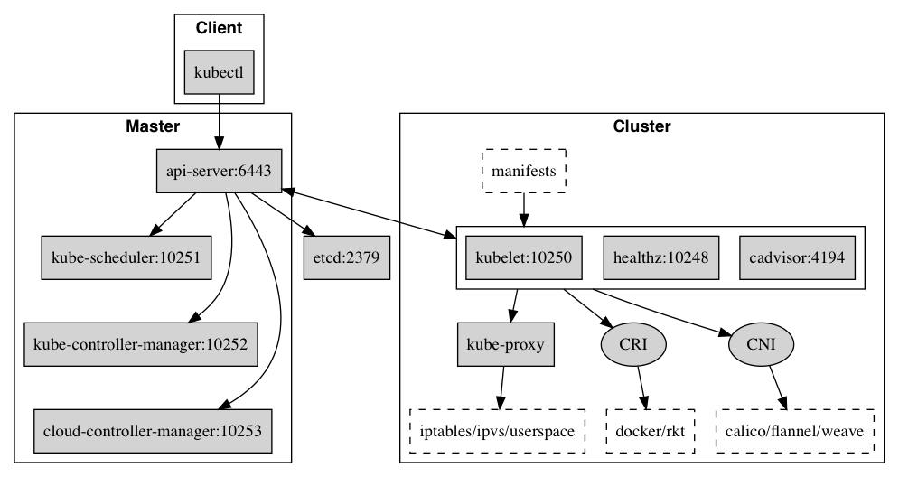

Kubernetes 核心组件
Kubernetes 主要由以下几个核心组件组成：
etcd保存了整个集群的状态；apiserver提供了资源操作的唯一入口，并提供认证、授权、访问控制、API 注册和发现等机制；controller manager负责维护集群的状态，比如故障检测、自动扩展、滚动更新等；scheduler负责资源的调度，按照预定的调度策略将 Pod 调度到相应的机器上；kubelet负责维护容器的生命周期，同时也负责 Volume（CVI）和网络（CNI）的管理；- Container runtime 负责镜像管理以及 Pod 和容器的真正运行（CRI）；
kube-proxy负责为 Service 提供 cluster 内部的服务发现和负载均衡
除了核心组件，还有一些推荐的 Add-ons：
- CoreDNS 负责为整个集群提供DNS服务（也可以使用
kube-dns，更推荐使用 CoreDNS） - Ingress Controller 为服务提供外网入口
- Prometheus 提供资源监控 （Heapster 不建议使用，将被弃用）
- Dashboard 提供 GUI
- Federation 提供跨可用区的集群
- Fluentd-elasticsearch 提供集群日志采集、存储与查询
组件通信
多组件之间的通信原理为：
apiserver负责操作etcd，且只有apiserver才直接操作etcd集群apiserver对内（集群中的其他组件）和对外（用户）提供统一的 REST API，其他组件均通过apiserver进行通信- controller manager、
scheduler、kube-proxy和kubelet等均通过 apiserver watch API 监测资源变化情况，并对资源作相应的操作 - 所有需要更新资源状态的操作均通过
apiserver的 REST API 进行
- controller manager、
apiserver也会直接调用kubeletAPI（如logs,exec,attach等），默认不校验kubelet证书，但可以通过--kubelet-certificate-authority
开启（而 GKE 通过 SSH 隧道保护它们之间的通信）
典型的创建 Pod 的流程为：

端口号
